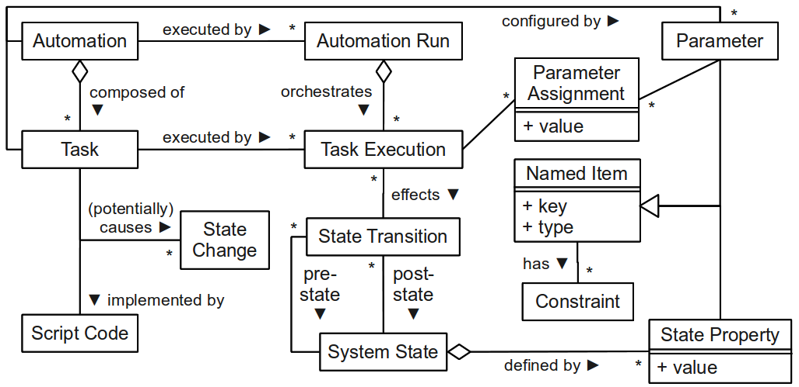
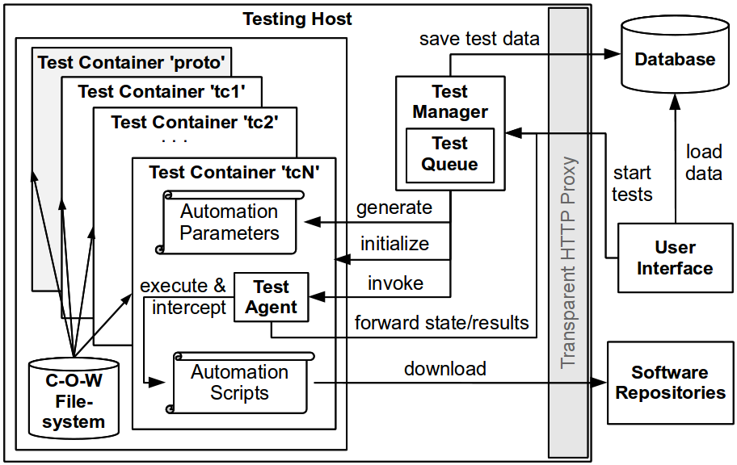

System Model
To briefly introduce the problem domain, we refer to the abstracted system model depicted in
Figure 1. The core entity is denoted automation, which represents the logic of a piece of
Infrastructure as Code (IaC, see here
for a brief overview).
An automation consists of multiple automation tasks,
which are implemented by some script code and are supposed to cause potential state
changes. From the runtime perspective, an automation run represents the entire
execution of an automation, which itself consists of multiple task executions. Each
task execution effects a set of concrete state transisions which are actually
measurable in the system by comparing the pre-state before execution with the
post-state after execution. Automations and tasks are configured by parameters
which steer the execution of the IaC logic at runtime.

Figure 1: Domain Model of IaC Automation Scripts
Framework Architecture
We briefly discuss the implementation of our distributed testing
framework. Figure 6 illustrates the architecture from the perspective of a single
testing host. A Web user interface guides the test execution. Each host runs a test
manager which materializes tests and creates new containers for each test case.
State changes within the containers are monitored using
strace.

Figure 2: Test Framework Architecture
Our framework parallelizes the execution in two dimensions: first, multiple
testing hosts are started from a pre-configured VM image; second, each testing
host contains several containers executing test cases in parallel. We utilize the
highly effcient Linux containers (LXC). Each container has a dedicated root
directory within the host's file system. We use the notion of prototype
container templates (denoted 'proto' in Figure 2) to provide a clean environment for each
test. Each prototype contains a base operating system (Ubuntu 12.04 and Fedora
16 in our case) and basic services such as a secure shell (SSH) daemon. Instead
of duplicating the entire filesystem for each container, we use a
copy-on-write (C-O-W) filesystem, which allows to spawn new instances within a few
seconds. To avoid unnecessary re-downloads of external resources (e.g., software
packages), each host is equipped with a Squid proxy server.